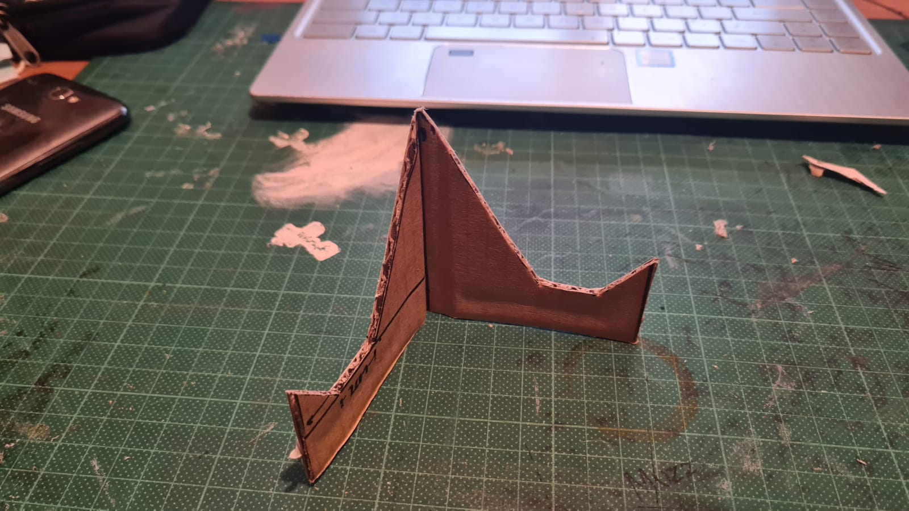
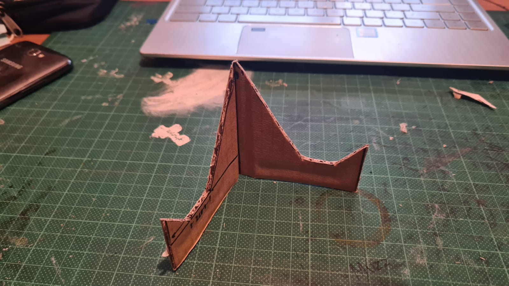

Fablab Safety:
In the event of an emergency or fire:
- Stay calm and do not panic
- Quickly imform the lecture-in-charge
- For SCDF, call 995
- For Police, call 999
- For Campus Security, call 6772-1234
Workshop Safety:
General rules:
Common safety signs:
Seen all around the workshop as posters or signs, these are here to remind you to follow the rules and to be careful especially around the machines.
Safety Warning placards:
Usually hung on each of the machines in the SP workshop. It shows the level of danger of the machines and the appropriate measures to take when using them. It is very important to always read and understand the information before operating the machine.
Safety Work Procedure (SWP):
Usually hung together with the safety warning placards on each of the machines in the SP workshop . You are required to read it before using the machine. It shows the personal protective equipment that is required and important information on the various operations of the machine.
Tools:
Power tools
A power tool is any tool that uses an additional power source like elctricity for example.They are used for construction and several DIY jobs such as production, assembly, packaging, and maintenance. They are available in many sizes and shapes and are simple to operate.
Typical power tools that are used include:
- Air compressor
- Power drill
- Sander
- Table saw
- Rotary tool
Hand tools
A hand tool is any tool that is powered by hand rather than a motor. They are useful for daily task and are commonly found in every household. I myself have a tool box full of them at home to which I mainly use to work on my bike and occasionally fix those Ikea furnitures.
Typical hand tools that are used include:
- Pliers
- Cutters
- Screwdrivers
- Vices
- Files
Tools Assignment
For this assignment, Ive created a simple and portable smartphone stand from cardboard. I took the measurements from a Youtube video which you can can watch if you Click here. I only had to use my pen knife for this. It actually turned out great and it nicely fits in my pocket. This would be great as a gift to my friends.
 
